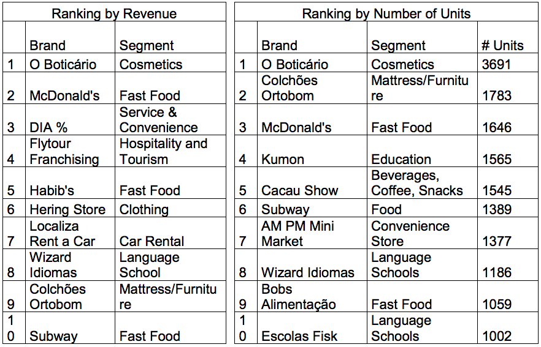

Brazil’s franchise sector is among the largest and most sophisticated in terms of business practices and growth, adapting concepts from both foreign and domestic franchisors. The sector has consistently grown faster than the overall Brazilian economy and has become one of its main growth engines. Today, even traditional retail companies are introducing franchising into their expansion strategy. The strength of Brazil’s local franchise concepts poses special challenges for U.S. entities who wish to enter this robust market, more so than what they might encounter in other Latin American markets. However, Brazil’s current market size and future growth forecast of the nation’s economy, notably its internal consumption rate, point to open doors, and place Brazil on many U.S. franchisors’’ lists of expansion markets.
In 2013, the Brazilian franchise sector grew by 11.9 percent, and total sector revenue was about R$115 billion (US$52 billion). There are an estimated 2,703 franchising chains and 114,409 franchising units in the country, making Brazil the sixth-largest in the world (in number of units) and the 3rd largest in number of franchise chains. In the last year, 277 franchisors reportedly entered the market The number of chains grew from 2,426 in 2012 to 2,703 in 2013 (+11.4%), surpassing the American market, in total number of franchise model brands sold, which in 2013 accounted for 2,500 brands. In fact, the United States currently ranks 4th worldwide.
According to the World Franchise Council, Brazil ranks third in number of brands behind China (4,000) and South Korea (3,034). For 2014, the Brazilian Association of Franchising (ABF) projects a further increase of 10%, driven greatly by the opening of new shopping centers around the country, many catering to upper middle class consumers; and the overall forecasted growth of Brazil’s economy.
The best-performing franchise sector in Brazil in 2013 was in sport, health, beauty and leisure products and services, which grew 23.9%. This was followed by the hotel/hospitality industry, which had an increase of 21.9%. The slowest-moving sectors in terms of growth were found in such retail and b-2-b concepts as Gasoline Stations, Supermarkets, Convenience Stores, Logistics and Transportation, Financial Services, Bookstores, Pet Shops, and Catalogue Sales. The discontinuation of some consumer-facing retail services such as photography/film processing and video rental stores is partially to blame for the downturn.
Local Brazilian franchises dominate the market across many sectors, controlling 92.4% of sales volume; while foreign groups, mostly from the U.S., are making headway. According to ABF, 206 foreign franchise brand concepts currently operate in Brazil, of which 93 are based in the U.S.
Top Players Ranked by Revenue, Number of Units
The ranking of the top ten franchise operations in Brazil, both by revenue and number of units, shows the dominance of Brazilian franchisors over foreign ones. Only four out of the top 10 performing franchise brands (in terms of earnings revenue and number of units in operating) are foreign: McDonald’s, Subway and AM-PM Mini Market from the US; and Kumon from Japan.

Finding suitable master franchisees in Brazil is a very challenging job for US franchisor companies. One strategy is to develop relationships with Brazilian franchisors and master franchisees of non-competing, yet complementary concepts. In general, Brazilian investors make decisions based on well-structured business plans and the expectations of financial return. It is misleading to think that emotional factors will heavily influence a decision in favor of a certain brand or business concept. It is important that foreign franchisors understand this, and approach the market only after having done the necessary homework, having estimated the true potential of the brand for Brazil.
It is also increasingly common for a Brazilian investor to negotiate risk -sharing agreements with the foreign franchisor when introducing a new brand to the market. “Risk” in this case refers to making actual direct investment in the form of a joint-venture partnership. Also, as many Brazilian concepts are now seeking to expand internationally, some will be open to discussing bilateral agreements, wherein a foreign brand is launched in Brazil at the same time as the foreign franchisor develops a Brazilian brand in its home country. According to ABF, 121 Brazilian brands are present in 60 countries in all continents.
Resources:
World Franchise Council http://www.worldfranchisecouncil.net/
Brazilian Franchise Association www.portaldofranchising.com.br/